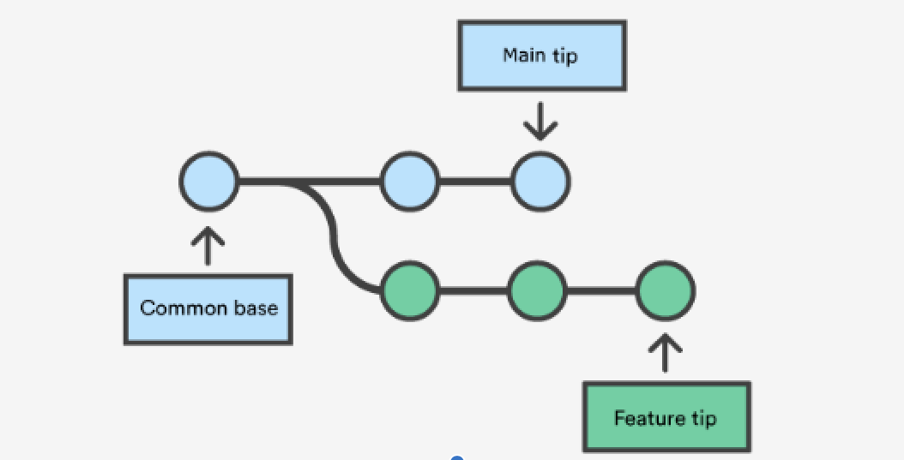
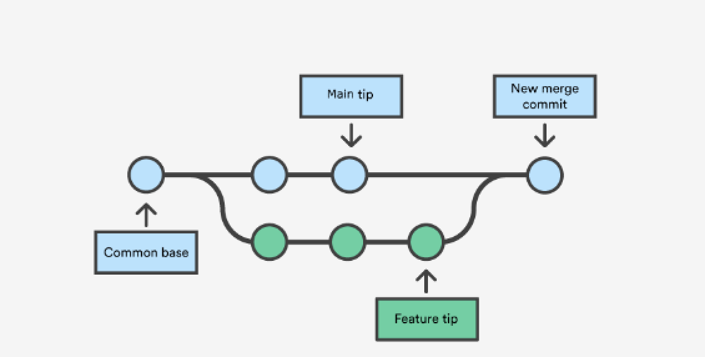
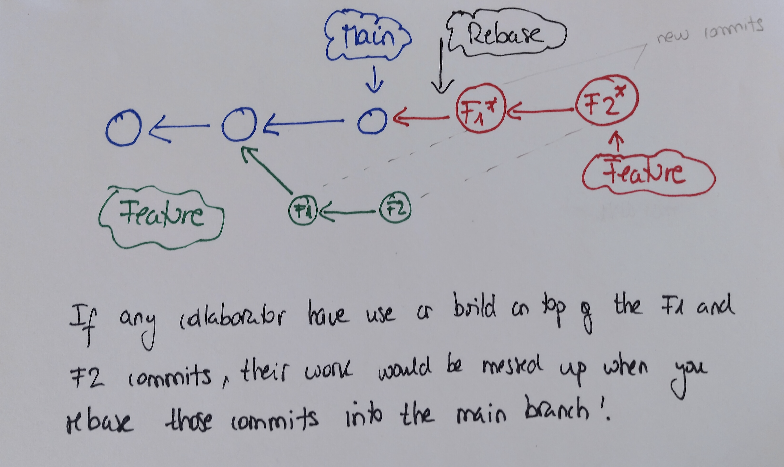
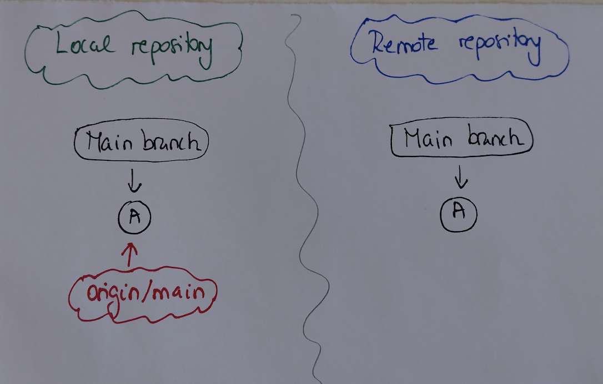
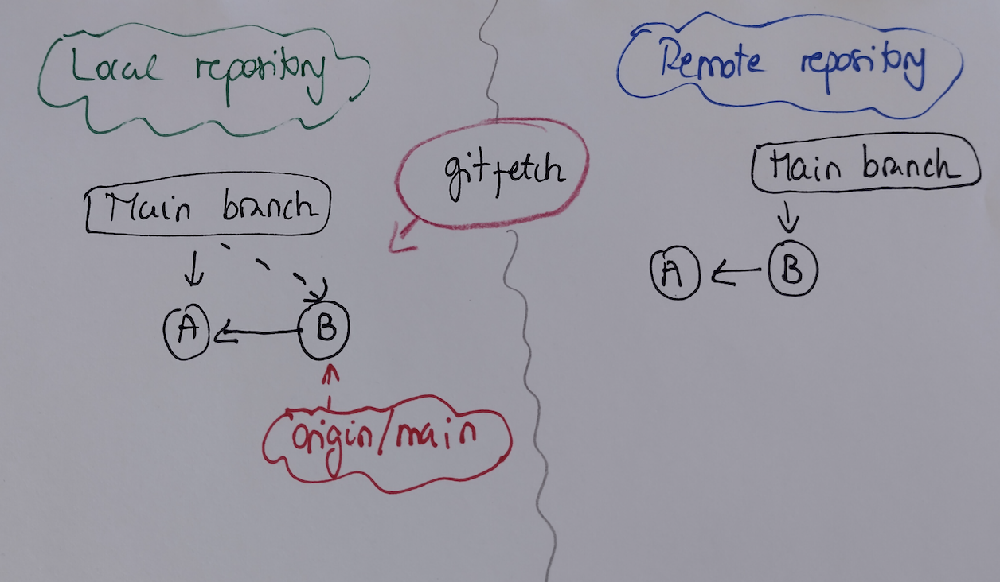

ETC5513: Reproducible and Collaborative Practices
Reproducible reporting and version control systems
Lecturer: Michael Lydeamore
Department of Econometrics and Business Statistics
Open Frame

Recap
- More Git/GitHub tools
- Pull requests: a tool to collaborate with others via GitHub
- VSCode
Today’s plan
Aim
- Learn about
git rebase - Learn about
git fetchandgit merge - Learn about staging and unstaging files
- Learn how to undo some changes
Rebase
In git, there are two main ways to integrate changes from one branch into another:
git mergegit rebase
Merging branches using git merge
If we use git merge to combine diverging branches, we will have a non-linear history.


Question
In which situation can we merge branches and have a linear history?
Rebase
Rebasing is the process of moving or combining a sequence of commits from a branch onto another branch.
- Rebasing is most useful and easily visualised in the context of a feature branching workflow
- Rebasing changes the base of your branch from one commit to another, making it appear as though you’d created your branch from a different commit.
Important
Rebasing moves an entire branch to another location in the repository
It can create a cleaner history if you don’t want merge lines everywhere.
Rebase in practice
Assume the following history exists and the current branch is feature:
E<---F<---G feature
/
A<---B<---C<---D mainIf we want to rebase the commits in the feature branch into the main branch, we need to do the following:
git checkout featureandgit rebase main
or
git rebase main feature
feature E'<--F'<--G'
/
A<---B<---C<---D mainwhich results in:
A<---B<---C<---D<---E'<--F'<--G' mainRebasing can be dangerous
Git rebase and merge
Merging is a non-destructive operation. The existing branches are not changed in any way, and this avoids all the potential problems of rebasing.
Rebasing moves the entire
featurebranch to begin on the tip of the main branch, incorporating all of the new commits into main.Rebasing rewrites the project history by creating brand new commits for each commit in the original branch, giving a cleaner history
However, this creates problems with safety and traceability
Golden rule for rebase
Never use it on public branches (such as main) in collaborative projects.
More on branching
Imagine that you are working on your local repository and a collaborator has created a new branch in your remote repo. You are currently working on your local repo and want to have a look at the new branch. That means that the local repo and your remote repo have diverged. That is, both the local and remote repositories are not currently synchronized.
- To synchronize your work:
git fetch origin git fetch originlooks whereoriginis and fetches any data from it that you don’t yet have.- It also updates your local database repo, moving your origin/main pointer (HEAD) to its new, more up-to-date position. However, it does not move the HEAD of your local repository
About remotes
Note: If a git repo contains more than one remote, then git fetch will fetch all the changes from all remotes.
To fetch only one, use git fetch origin (or whatever remote you are after).
Why use fetch?
origin/main is the remote tracking branch, which provides information about where the main branch is in origin
How does fetch work?
git fetch downloaded the new B commit however our local working directory is not updated, and the head of our main branch is still pointing to commit A.
How do we merge those branches?
We need to combined main branch with the remote tracking origin/main branch. How?
By merging!
First, we need to move in the main branch and then merge origin/main
git checkout main
git merge origin/mainIf the branches have not diverged, we can merge without conflict via a ‘fast merge’.
If the branches have diverged, we will need to resolve conflicts.
You can check the status of the local and remote branches by using git branch -vv
Very useful commands for fetching
git remotelets you create, view, and delete connections to remote repositories.git branch -vvallows you to check the status of your local and remote branches in relation to each other.git fetchoriginfetches the changes from remote origingit branch -alists all the branches available in the local repository + all the branches fetched from the remote.
Tip
The branches fetched from the remote origin would be preceded by remotes/origin/
Undoing an error
Not everything we do on a project will be worth keeping. We’ve seen already one way to undo some work (git stash). But, that relies on not having already committed the changes.
What if we’ve made a commit, and then realise we don’t want that commit anymore?
We can reset
Or revert
Undoing an error
First, we should discuss checkout. We’ve talked alot about HEAD - that’s the current pointer of the repository.
We’ve seen git checkout before too: When swapping between branches!
Fundamentally, branches are just commits with a slightly different pointer. That means, we can checkout to a specific commit.
One option to go backwards on the git tree and make a new set of changes is to checkout to a commit hash, make the new changes, and then push and manage the merge conflicts.
Undoing an error
Here’s our git tree:
(a) --- (b) --- (c) --- (d) <- HEAD, mainWhen we checkout b, our git tree changes to:
(a) --- (b) --- (c) --- (d) <- main
\
HEADNote that doing this will create diverging histories and so is generally to be avoided. You can overwrite history using git push -f, but this is really discouraged.
Reset or Revert
There are two ways to change commit history of a repository: reset and revert.
Tip
Generally, reset is for when the commit isn’t public, and revert is when you’ve already made a public commit.
This is because reset changes the commit history, and revert does not.
🛑 Two Very Different Tools
| Command | What it does | Safe on shared branches? |
|---|---|---|
git revert |
Adds a new commit that undoes changes | ✅ Yes |
git reset |
Moves branch pointer (can erase commits) | ❌ Use with caution |
🔁 git revert
- Safely undoes a specific commit
- Leaves history intact
- Perfect for undoing mistakes on main or shared branches
✍️ git revert Example
You added a bad commit:
Find the commit to undo, then:
✅ Creates a new commit that reverses the changes
🧹 git reset
- Rewrites history ⚠️
- Used to go back in time
- 3 types:
--soft,--mixed,--hard
🧪 Reset Variants
--soft
- Undo commit, keep staged changes
--mixed (default)
- Undo commit, keep unstaged changes
--hard
- ⚠️ DANGEROUS: Lose commits and file changes
🔍 Visualizing Revert vs Reset
Original history:
A --- B --- C --- D (main)You realize C introduced a bug…
git revert C:
A --- B --- C --- D --- E ← E undoes the changes from CHistory stays intact ✔️
🔍 Visualizing Revert vs Reset
Original history:
A --- B --- C --- D (main)You realize C introduced a bug…
git reset --hard B:
A --- B (main rewound — commits C and D are gone!) ⚠️History is rewritten 🚨
🧠 When to Use Which?
| Situation | Use revert |
Use reset |
|---|---|---|
You’re on main or working with others |
✅ Yes | ❌ No |
| You need to undo a public commit | ✅ Yes | ❌ No |
| You’re cleaning up your own history | ❌ No | ✅ Yes |
| You want to fix a commit but keep edits | ❌ No | ✅ (soft/mixed) |
💡 Pro Tips
- Always check
git logbefore undoing! - Use
resetonly on branches you haven’t shared - Use
revertwhen you need a safe undo that keeps history
Week 6 Lesson
Recap
- Learn about
git rebase - Learn about
git fetchandgit merge - Learn about staging and unstaging files
- Learn how to undo some changes

ETC5513 Week 6